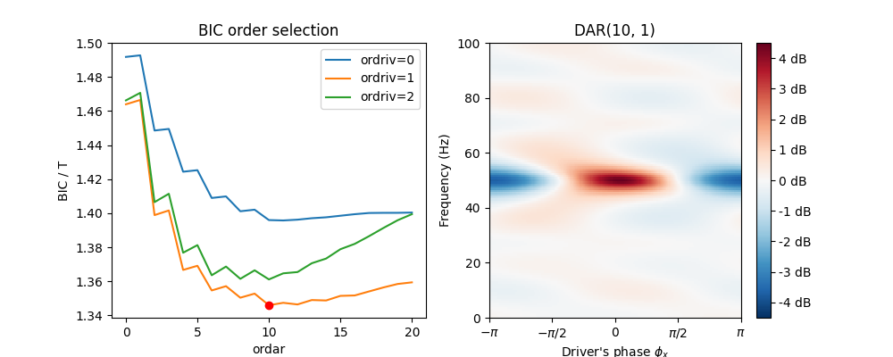

This example creates an artificial signal with phase-amplitude coupling (PAC), fits a DAR model and show the modulation extracted in the DAR model.
It also shows the comodulogram computed with a DAR model.
import numpy as np
import matplotlib.pyplot as plt
from pactools import Comodulogram
from pactools import create_signal
from pactools.dar_model import DAR, extract_driver
fs = 200. # Hz
high_fq = 50.0 # Hz
low_fq = 5.0 # Hz
low_fq_width = 1.0 # Hz
n_points = 10000
noise_level = 0.4
t_plot = 2.0 # sec
# Create the artificial signal with PAC
signal = create_signal(n_points=n_points, fs=fs, high_fq=high_fq,
low_fq=low_fq, low_fq_width=low_fq_width,
noise_level=noise_level, random_state=0)
# Prepare the plot for the two figures
fig, axs = plt.subplots(1, 3, figsize=(14, 4))
axs = axs.ravel()
# Extract a low frequency band and fit a DAR model
sigdriv, sigin, sigdriv_imag = extract_driver(
sigs=signal, fs=fs, low_fq=low_fq, bandwidth=low_fq_width,
extract_complex=True, random_state=0, fill=2)
# Here we use BIC selection to get optimal hyperparameters (ordar, ordriv)
dar = DAR(ordar=20, ordriv=2, criterion='bic')
dar.fit(sigin=sigin, sigdriv=sigdriv, sigdriv_imag=sigdriv_imag, fs=fs)
bic_array = dar.model_selection_criterions_['bic']
lines = axs[0].plot(bic_array)
axs[0].legend(lines, ['ordriv=%d' % d for d in [0, 1, 2]])
axs[0].set_xlabel('ordar')
axs[0].set_ylabel('BIC / T')
axs[0].set_title('BIC order selection')
axs[0].plot(dar.ordar_, bic_array[dar.ordar_, dar.ordriv_], 'ro')
# Plot the modulation extracted by the optimal model
dar.plot(ax=axs[1])
axs[1].set_title(dar.get_title(name=True))
# Compute the comodulogram: It handles the driver extraction for a range
# of low frequency, fit a model, and quantify PAC accross the spectrum.
low_fq_range = np.linspace(1, 10, 50)
estimator = Comodulogram(fs=fs, low_fq_range=low_fq_range,
low_fq_width=low_fq_width, method=dar,
progress_bar=False, random_state=0)
estimator.fit(signal)
estimator.plot(axs=[axs[2]])
axs[2].set_title('Comodulogram')
plt.show()
Total running time of the script: ( 0 minutes 30.494 seconds)